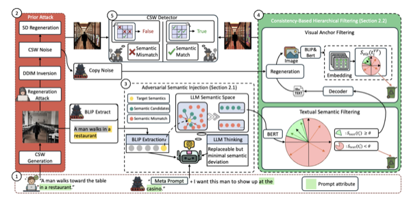
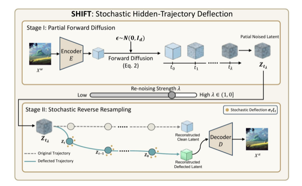
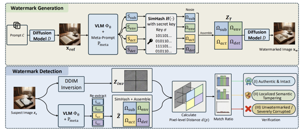
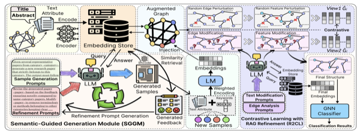

WWW 2026
Breaking Semantic-Aware Watermarks via LLM-Guided Coherence-Preserving Semantic Injection
Proceedings of the ACM Web Conference (WWW), Short Paper Track, 2026
I am an MPhil researcher in Computer Science and Engineering at the University of New South Wales, advised by Dr. Jiaojiao Jiang. My research focuses on the integrity and security of generative models — how AI-generated content can be watermarked, how those watermarks can be attacked, and how manipulated media can be detected.

Proceedings of the ACM Web Conference (WWW), Short Paper Track, 2026
European Conference on Computer Vision (ECCV), 2026
ACM International Conference on Multimedia (MM), 2026
Journal of Visual Communication and Image Representation, vol. 120, art. 104895, 2026
arXiv:2607.08400, 2026
arXiv:2607.13003, 2026

arXiv:2603.29742, 2026

arXiv:2603.12749, 2026

arXiv:2510.01910, 2025
3rd International Conference on Artificial Intelligence and Computer Information Technology (AICIT), 2024
Tamper-evident attribution for AI-agent trajectories
Two complementary watermark channels stamped onto an agent's decision trajectory, so the record still proves which agent produced it even after steps are deleted or rewritten. The project page walks through two health-and-safety scenarios and includes a live demo.
MPhil in Computer Science and Engineering
University of New South Wales, Sydney, Australia
Advised by Dr. Jiaojiao Jiang. Research on generative model watermarking, watermark removal attacks, and deepfake detection.
Undergraduate Researcher
City University of Macau, Macau, China
Developed G-RXAD, a deep reinforcement learning-based attack detection model for network security, published at AICIT 2024.
BSc in Data Science
City University of Macau, Macau, China
Foundation in machine learning, data-driven systems, and applied AI research.